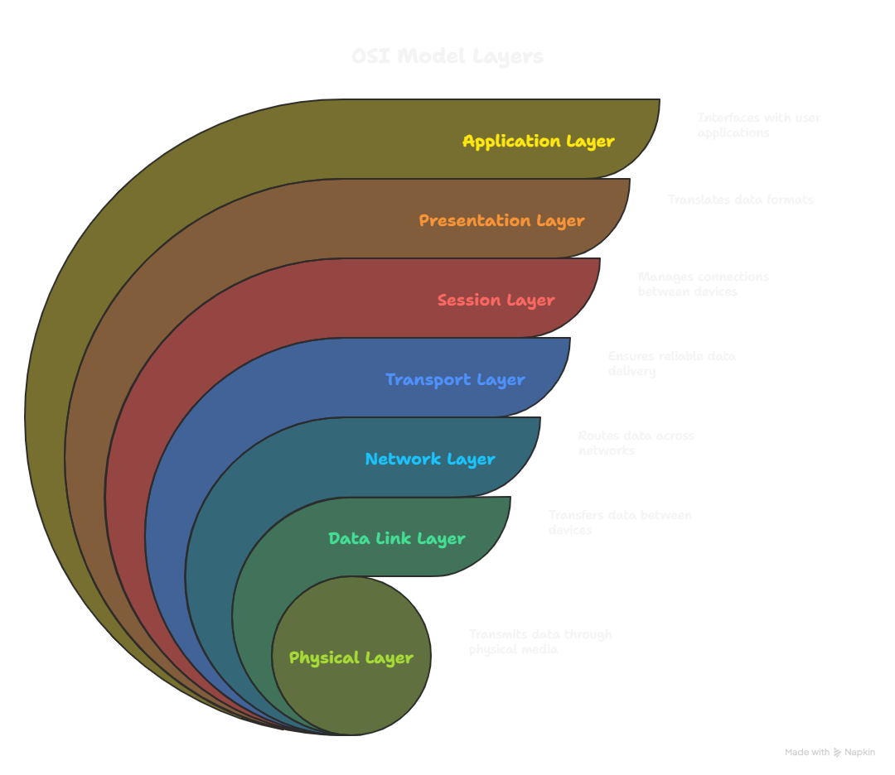

Picture this: you’re sending a message to a friend across the globe. The internet doesn’t just toss it whole—it chops it into tiny bits, like slicing a pizza. These bits, called packets, zip through cables, bounce off satellites, and find their way to your friend’s phone. Each packet has a little tag—an IP address—that acts like a GPS, ensuring it arrives at the right place. Once there, the packets snap back together, and voila! Your message is delivered, ready to be read.
Let’s say you’re in India, craving a gadget from Amazon USA. When you hit “Buy Now,” something incredible happens. Your click turns into a digital order slip that races to Amazon’s servers. From there, a real-world package gets a tracking ID and starts its adventure—hopping on planes, ships, and trucks. Meanwhile, the internet keeps tabs on every move, like a high-tech treasure map guiding your package to your doorstep.
Clicking on a YouTube video feels instant, but there’s a whirlwind of action behind it. Your request zips through routers to YouTube’s servers. The video gets broken into bite-sized chunks, and these packets speed along different paths—like cars in a race. Your phone or laptop grabs them, pieces them together, and suddenly, you’re laughing at a cat in sunglasses. It’s like a puzzle that solves itself in milliseconds!
Think of the internet as a seven-layer cake, with each layer doing its part to keep things running smoothly. Here’s how it works, layer by layer, with a peek at the OSI model to make it crystal clear.
Want a visual? Check out the OSI model below—it shows how these layers stack up to make the internet tick.
From late-night shopping sprees to binge-watching your favorite shows, networks are the invisible forces making it all happen. Every click sends data on a wild ride through cables, servers, and airwaves. Next time you stream a video or order something online, remember: you’re part of a global digital adventure!